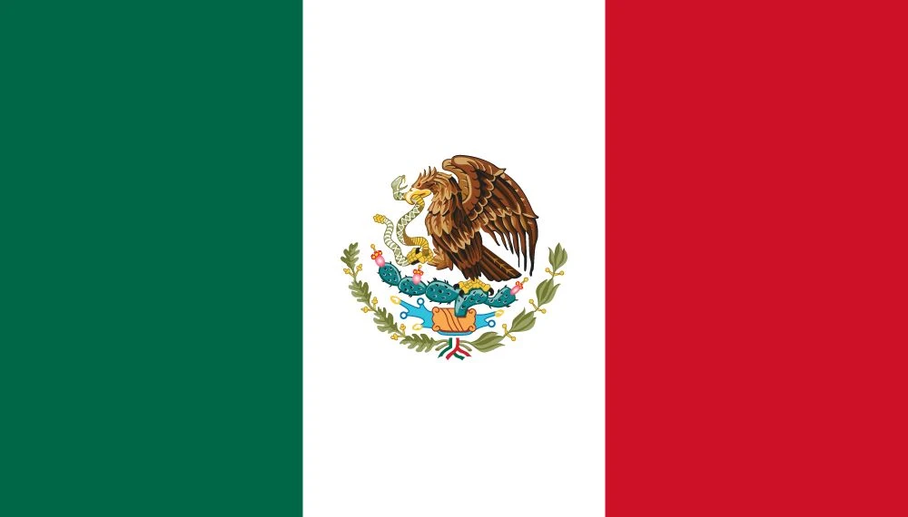

1. Brazil’s Samba Kings: The Day Football Reached Perfection
June 21, 1970—Estadio Azteca, Mexico City. The air is thick with heat and history, 107,412 fans packed into the stands, their voices a deafening roar. On the grandest stage of them all, Brazil and Italy stand toe to toe in the World Cup final. But this isn’t just a football match—it’s a coronation. Because Brazil aren’t just a team. They’re a force of nature. They move like dancers, strike like artists, and before the night is over, they will redefine the sport itself.
They’ve already torn through this tournament like a whirlwind, dismantling anyone who dared step in their path. Czechoslovakia? Brushed aside 4-1, Jairzinho opening his account. England? A tight 1-0 victory, his goal sinking the defending champs. Romania tried to stand firm but fell 3-2—Pelé, the King himself, with a brilliant brace. In the quarters, Peru crumbled under the heat, 4-2, Tostão running riot. Uruguay, stubborn and proud, held them for a while in the semis—until Clodoaldo’s rocket shattered their resolve in a 3-1 win. Now, only Italy remain.
The whistle blows. The greatest final in World Cup history is about to unfold.
The Coronation of Kings
Brazil are relentless from the start. It takes just 18 minutes for them to carve Italy open. Rivelino, that left foot like a magician’s wand, whips a cross into the box. Pelé, defying gravity, rises above Tarcisio Burgnich and thunders a header past Enrico Albertosi. The Azteca erupts. The King has spoken.
But Italy, battle-hardened and defiant, hit back. A defensive blunder, and suddenly Roberto Boninsegna pounces in the 37th minute. 1-1. The Azzurri cling on, throwing bodies in the way, hoping to weather the storm. But Brazil don’t do caution. They play like men possessed.
Then comes the avalanche.
Minute 66—Gérson, the midfield general, collects the ball 25 yards out. One touch, a glance up, and then—boom! A left-footed thunderbolt screams into the net. 2-1. He wheels away, arms raised. The dam has broken.
Five minutes later, the knockout punch. Gérson again, this time threading a pass to Jairzinho, who bundles the ball over the line. Seven goals in seven games—the only player in history to score in every match of a World Cup. It’s 3-1. The Italians are broken.
But Brazil aren’t done. They need a masterpiece.
It comes in the 86th minute. The move starts deep in their own half. Clodoaldo shimmies past four Italians like a street performer dribbling a ball through a market. He lays it off to Rivelino, who sends it wide to Jairzinho. A quick pass to Pelé, standing at the edge of the box, cool as a summer breeze.
Pelé doesn’t even look. He just rolls the ball into space.
And then, like a bolt of lightning, Carlos Alberto arrives. The Brazilian captain sprints in from the right, unleashes a cannon shot first-time, and the net nearly explodes. 4-1. Football, in its purest form, has just been played.
Pelé lifts his arms, his work complete. This is not just victory. This is art.
The Aftermath: A Team for the Ages
When the final whistle blows, Brazil collapse in joy. Pelé is hoisted into the air, tears in his eyes. They haven’t just won the World Cup—they have claimed it. With their third title, the Jules Rimet trophy is now theirs forever.
Italy’s captain, Giacinto Facchetti, can only shake his head in disbelief. “We played against gods,” he mutters.
Coach Mário Zagallo, the mastermind, stands on the sideline, grinning. “It’s Brazil’s game,” he says later, beer in hand. Tostão, still catching his breath, laughs. “We just had fun!”
The stats are staggering. Six games, six wins. Nineteen goals scored. Brazil didn’t just beat their opponents—they left them spellbound.
Across the world, the footage plays on loop—Carlos Alberto’s rocket, Pelé’s leap, Clodoaldo’s dazzling footwork. “Best ever,” England’s Bobby Moore nods, pint in hand.
Brazil ’70 isn’t just a team. They’re a legend. A timeless masterpiece. A moment in football history that will never fade.

2. Pelé’s Last Dance: The King Bows Out in Glory
Mexico, 1970. The summer sun beats down on football’s grandest stage, and at its center stands a man who has defined the game for over a decade. Pelé, 29 years old, the King of Football, strides into his fourth and final World Cup. His body bears the scars of past tournaments—hacked out of ’66, a bruised warrior—but his spirit? Untouched.
This is his last dance, and he’s here to remind the world who reigns supreme.
The Opening Act: A King in His Element
The curtain lifts in Guadalajara, June 3rd. Brazil face Czechoslovakia, and Pelé wastes no time. A delicate touch, a lethal finish in the 19th minute—his first World Cup goal in eight years. Later, in the 67th, another clinical strike. Brazil waltz to a 4-1 victory. The message is clear: the King has still got it.
Then comes England. It’s a clash of titans—the flamboyance of Brazil against the grit of the reigning champions. In the 10th minute, Pelé rises above the English defense, meeting a Rivelino cross with a thundering header. It’s destined for the net. But then—that save. Gordon Banks, defying gravity, claws it away with an outstretched palm. Pelé holds his head in disbelief. “I thought I had scored,” he later admits. “But Banks performed a miracle.”
No matter. Jairzinho’s late strike seals a 1-0 win, and Brazil march on.
Romania come next, and it’s another Pelé masterclass. Two more goals—one a crisp finish at 19 minutes, the other a penalty at 67. Brazil edge a 3-2 thriller, but Pelé is thriving, grinning through the Mexican heat. “I’m here,” he seems to say, sweat dripping, eyes gleaming.
The Playmaker Steps Up
The quarterfinals bring Peru, and while Pelé doesn’t score, he orchestrates. Every move flows through him, every attack crafted with genius. He sets up Tostão’s second goal, and Brazil overpower the Peruvians 4-2.
Then, the semifinals—Uruguay, Brazil’s old nemesis. The ghosts of 1950 lurk in the shadows, but Pelé isn’t here for nightmares. He pulls off one of the most audacious moves of the tournament, letting a through ball roll past him, completely fooling the keeper with a dummy. The stadium gasps. But then, in the unlikeliest of moments, he misses the open net. No matter. He turns provider again, laying off for Jairzinho, who buries the clincher. 3-1, and Brazil are in the final.
One more game. One more shot at immortality.
The Grand Finale: A Performance for the Ages
June 21, 1970. Estadio Azteca. 107,412 fans packed into the stands. On one side, Italy, exhausted after their 4-3 extra-time war against Germany. On the other, Brazil, flowing, fearless.
Eighteen minutes in, the moment arrives. Rivelino swings a cross into the box. Pelé, always a step ahead, soars above Tarcisio Burgnich, hanging in the air like time itself has slowed. A perfect header. A perfect goal.
1-0, Brazil. The King leads his kingdom.
Italy claw back, equalizing through Roberto Boninsegna in the 37th minute. But Brazil aren’t just here to win—they’re here to mesmerize.
Minute 66—Gérson unleashes a left-footed thunderbolt. 2-1. Five minutes later, Jairzinho bulldozes his way through, tapping in Brazil’s third.
And then, the masterpiece.
The 86th minute. Brazil weave the ball from deep in their own half. Clodoaldo dances past four Italians. Rivelino spreads it wide to Jairzinho. He lays it off to Pelé, standing just outside the box. The King doesn’t even glance up. He knows.
A soft touch. A perfectly weighted pass into space.
And there comes Carlos Alberto, the captain, surging forward like a freight train. One strike. A thunderbolt into the bottom corner.
4-1. Football, elevated to art.
As the final whistle blows, Pelé collapses to the ground, overwhelmed. His teammates hoist him up, shirtless, drenched in sweat, beaming. “My last dance,” he says, breathless, eyes glistening.
The Aftermath: A Legacy Sealed in Gold
107,412 voices chant in unison—Pelé! Pelé! Even Italy’s defenders, humbled, acknowledge greatness. “He’s a god,” mutters Banks, still reeling from that save.
The numbers tell their own story. Four goals. Six assists. The architect, the finisher, the heart of this golden team. Over a pint, in pubs and living rooms across the world, people will talk about Mexico ’70 forever. The header against Italy. The dummy against Uruguay. The final pass to Carlos Alberto.
“I gave it all,” Pelé says later, watching the highlights, a knowing smile creeping across his face.
Bobby Moore, England’s captain, raises a glass. “The best,” he says simply.
Pelé’s name echoes through history, woven into football’s very fabric. His journey began as a 17-year-old in Sweden, dazzling the world in ’58. It nearly ended in heartbreak in ’66. But here, in Mexico, he closes the book in triumph.
Three-time world champion. Twelve World Cup goals. A king until the very last kick.
Pelé. Football, in its purest form.
3. Italy’s Bloody-Knuckled Run: The Warriors of Mexico ‘70
They weren’t the most dazzling team. They weren’t the fastest, nor the most creative. But Italy in 1970? They were the toughest, the grittiest, and the most battle-hardened squad in the tournament. They rolled into Mexico with a mission, fists clenched and jaws set, ready to grind their way to the top. And while Brazil would ultimately steal the show, no team left more blood, sweat, and sheer will on the pitch than the Azzurri.
Surviving the Gauntlet
The group stage was anything but pretty. Italy’s campaign began with a narrow 1-0 win over Sweden—Angelo Domenghini stabbing home in the 10th minute before the match dissolved into a gritty defensive scrap. What followed were two scoreless draws—0-0 against Uruguay, 0-0 against Israel. Fans groaned, critics scoffed. But inside the camp, there was no panic. “We’re here,” growled Dino Zoff, his gloves squeezed tight. And he had a point—three matches, just one goal conceded. It wasn’t poetry, but it was effective.
Then came the quarterfinals, and suddenly, the Azzurri came alive. Mexico, the host nation, stood in their way, but the home advantage meant nothing to a team forged in the fire of Italian steel. A chaotic first half saw Italy take the lead through a Mexican own goal in the 13th minute, only for Javier Valdivia to equalize minutes later. But when the second half rolled around, Italy pounced. Gigi Riva struck twice—lethal at 63 and 76 minutes—before Gianni Rivera iced it at 4-1. A demolition job. The doubters had been silenced.
Then came the war.
The Game of the Century
June 17, 1970. Estadio Jalisco, Guadalajara.
Italy vs. West Germany. The semifinal that would go down in history—not just as a classic, but as the classic.
It started innocently enough. Roberto Boninsegna pounced on a German mistake, slotted it past Sepp Maier in the eighth minute. Italy up 1-0. They dug in, bracing for the inevitable storm. And it came—late. With just seconds left in regulation, Karl-Heinz Schnellinger broke through, latching onto a cross to make it 1-1. Extra time beckoned.
Then? Pure, unfiltered chaos.
Gerd Müller, Der Bomber himself, smashed one home in the 94th minute. West Germany up 2-1. But Italy punched right back—Burgnich, the rugged defender, rifled one past Maier at 98. Four minutes later, Riva, all class, curled a beauty into the corner. 3-2, Italy!
But this match wasn’t done with us yet. Müller again, 110th minute. A scramble. A finish. 3-3. The Germans roared.
And then—Gianni Rivera.
Less than sixty seconds after Müller’s equalizer, the ball came rolling into the box. Rivera, calm as ice, guided it home. 4-3. The dagger.
The whistle blew, and bodies collapsed. Italy had won. The game? Immortalized. Five goals in 17 minutes of extra time. “We bled for it,” Riva gasped post-match, his shirt drenched in sweat. Fans still talk about it today—the moment when football became war, and Italy emerged, bloodied but unbowed.
A Battle Too Far
But as much as Italy had fought, as much as they had endured, there was still one mountain left to climb—Brazil.
Four days after the semifinal of a lifetime, Italy had to do it all again, this time against the greatest attacking side in history. And for a moment, they stood tall.
Pelé soared above Burgnich in the 18th minute—1-0, Brazil. But Italy, running on pure heart, clawed back. Boninsegna capitalized on a mistake in the 37th minute. 1-1. Maybe, just maybe, the tank had one last fight in it.
But Brazil weren’t West Germany. They weren’t going to slug it out. They were going to dance.
Gérson’s rocket in the 66th. Jairzinho’s muscle in the 71st. And then, the masterpiece—Pelé, a soft touch to Carlos Alberto, and the most famous goal in World Cup history. 4-1.
The dream was over.
Legacy of the Lions
As the final whistle blew, the Azteca erupted in yellow and green, Brazil hoisting their third World Cup. But Italy? They walked off with heads high. “We fought like dogs,” Boninsegna roared.
And fight they did.
Four wins, two draws, one loss. 10 goals scored. Riva finishing with five, a warrior’s tally. The numbers tell one story, but the images tell another—Riva bent over, gasping for breath; Rivera, arms raised in victory after the semifinal; Facchetti, exhausted but proud, leading his team to collect their silver medals.
And that semifinal? That 4-3 war? It never fades. Pub chatter still hums with it. Fans still replay the highlights. Riva’s curling strike. Müller’s ruthless finishing. Rivera’s winner.
“They’re lions,” Bobby Moore would later say. “Gritty as hell,” Pelé nodded. Even in defeat, they had left their mark.
And so, the tale of Italy ‘70 isn’t just about falling short in the final. It’s about resilience. It’s about endurance. It’s about the night in Guadalajara when eleven men, drenched in sweat, walked through the fire and refused to fall.
They weren’t the best. They weren’t the flashiest.
But they were warriors.
And warriors never fade.

4. England’s Sun-Baked Agony: When the Crown Slipped Away
The heat in León was unbearable. The air sat heavy, thick with tension and sweat, as England—the reigning world champions—stepped onto the pitch. June 14, 1970. The quarterfinals. A rematch of the ‘66 final. England vs. West Germany.
For 50 minutes, it was perfect.
Francis Lee smashed home in the 26th minute. Then Geoff Hurst—hero of Wembley—rose above the German defense in the 50th, nodding in England’s second. The Three Lions were purring, Bobby Moore orchestrating with the elegance of a maestro. “We’ve got this,” Alf Ramsey muttered, wiping sweat from his brow.
Then, everything unraveled.
A Lead Slipping Through Their Fingers
It started before the match even kicked off. England’s wall—Gordon Banks—was missing, floored by a dodgy plate of prawns. Banks, who had just days earlier pulled off the save against Pelé, lay in his hotel room, weak, helpless. In his place, Peter Bonetti—a fine keeper, but not Banks.
Still, England were in control. Until the 69th minute, when Gerd Müller—predator, poacher, the man who lived for these moments—struck. A scrambled goal, nothing pretty, but suddenly, it was 2-1.
Nerves set in. The German machine cranked up a gear. England, who had looked so composed, started to buckle.
82nd minute. Disaster.
A hopeful cross into the box, a leap from Uwe Seeler, and a looping header over Bonetti. The ball dropped into the net like a slow-motion nightmare. 2-2.
The whistle blew. Extra time.
And then, Müller again.
108th minute. A German corner, chaos in the box. Bonetti—who had already looked shaky—found himself flailing. The ball dropped at Müller’s feet, and the inevitable happened. He swiveled. He struck. He scored. 3-2.
The dagger through the heart.
The Final Whistle: A Kingdom Falls
When the referee’s whistle finally rang out, England’s players stood frozen. Moore, hands on hips, staring at the ground. Hurst, jaw clenched, a look of disbelief. Lee, cursing under his breath.
West Germany celebrated, but England’s collapse stole the headlines. How did this happen?
In pubs across England, fans sat in silence, rewatching clips on their screens. The first-half brilliance. Moore’s composure. The Seeler goal, the Müller winner. And then that Banks save on Pelé from days before—so close to legendary status, now just a cruel reminder of what might have been.
“It slipped away,” Moore sighed, voice low.
And just like that, the crown was gone.
The Aftermath: Heartbreak and Reflection
Alf Ramsey didn’t say much. “So close,” he muttered to reporters. He knew the truth—England had let this one slip.
The players were gutted. Hurst, the hat-trick hero of ‘66, left León knowing he would never lift that trophy again. Bonetti, unfairly, became the scapegoat. The one whose hands weren’t quite steady enough.
In contrast, West Germany marched on. They faced Italy in the semifinal, producing the greatest game in World Cup history—that 4-3 extra-time war. But for England, the tournament was over.
Three wins. Three goals in the quarters. But not enough.
The Legacy: The One That Still Hurts
To this day, it stings. England had one of the best squads in their history—Moore in his prime, Banks at his best (until the prawns), Hurst still a force. They had led 2-0.
They should have won.
Even Pelé, years later, would say, “They were gutsy.” England had fought, had looked the part, but had fallen when it mattered most.
For fans, it remains the eternal what if. What if Banks had played? What if Seeler’s header had bounced wide? What if Bonetti had been sharper?
Instead, it’s just the tale of how England’s crown, gleaming in the Mexican sun, slipped away.

5. Müller: The Goal-Hungry Ghost
Gerd Müller wasn’t just a striker; he was a force of nature. Stocky, unassuming, but utterly lethal in front of goal, he arrived at Mexico ’70 with one mission—score, and score again. And that’s exactly what he did. Ten goals in six games, a Golden Boot-winning rampage that left defenders in ruins.
He wasted no time. First up, Bulgaria—West Germany’s opener—and Müller delivered a masterclass. A hat-trick, just like that. A poacher’s finish in the 27th, a tap-in at 52, and a clinical strike at 88. 5-2, Germany rampant. Next, Peru—another three. The first in the 19th, another at 26, and a third by the 39th. Three games, seven goals.
But the best was yet to come.
Against England in the quarterfinals, Müller found space where none seemed to exist. First, in the 31st minute, he pounced—a fox in the box, sneaking in to pull one back. Then, in extra time, he broke English hearts. 108th minute, the ball drops, and there’s Müller, spinning, striking, sending West Germany into the semifinals with a 3-2 win.
What followed was one of the greatest games ever played—West Germany vs. Italy in a semifinal for the ages. The match was a war of attrition, dragging into extra time at 1-1. Then came the madness. Müller made it 2-2 in the 94th minute. Italy hit back. He equalized again in the 110th. But Italy had the last word—Rivera’s goal at 111 sealed the deal. It finished 4-3. A classic, but for Müller, heartbreak.
For the third-place match against Uruguay, he rested. His job was done. West Germany took bronze, and Müller walked away with ten goals to his name—nobody could touch him. “I just score,” he said, as if it were the simplest thing in the world.
To this day, pubs replay his goals on a loop—his ruthless efficiency, his perfect positioning. “He was a ghost,” Italy’s Riva said. One moment he wasn’t there, the next, the ball was in the net. “Lethal,” Pelé nodded. In six matches, Müller had cemented himself as one of the greatest goal-scorers the game had ever seen.
Mexico ’70 belonged to Brazil, but Gerd Müller left his own unforgettable mark. Ten goals, six games, a masterclass in finishing. The Goal-Hungry Ghost, forever haunting defenders.
6. Peru’s South American Spark
Peru didn’t come to Mexico ’70 just to make up the numbers. They came to dance, to dazzle, and to remind the world that South American flair wasn’t just a Brazilian monopoly. With Teófilo Cubillas pulling the strings, they played some of the tournament’s most electrifying football, lighting up the competition with skill, spirit, and no shortage of goals.
Their opening match against Bulgaria was a test of character. Down 2-0 early, Peru clawed their way back, fueled by sheer attacking verve. Alberto Gallardo struck a rocket in the 50th minute to complete the comeback. A 3-2 win, a statement made.
Next came Morocco. This time, it was the Cubillas show. He struck early, a cool finish in the 11th, and doubled up in the 57th. Peru danced through the defense, playing with a swagger that turned heads. A 3-0 win.
Then came West Germany. A reality check. Müller’s ruthless hat-trick proved too much, a 3-1 defeat. But Peru had done enough—they were through to the quarterfinals, carrying the hopes of a nation.
And then, the ultimate test—Brazil.
The world champions. Pelé, Jairzinho, Tostão, Rivelino—the greatest attacking force football had ever seen. But Peru weren’t intimidated. Cubillas struck in the 11th minute, a stunner that sent a ripple of shock through the Brazilian defense. For a moment, the impossible seemed possible.
But Brazil responded in kind. Tostão’s brace at 15 and 52, Rivelino’s thumping strike in the 70th—it ended 4-2, Peru bowing out, heads held high.
It had been a fearless run. Three wins, one loss, nine goals scored—South America had a new rising power. Pubs buzzed with tales of their fight, of Cubillas’ brilliance, of a team that had played with courage and conviction. “We’re here,” Cubillas had grinned, sweat dripping, five goals to his name.
In Lima, the streets were alive with celebration, despite the exit. Peru had left a mark. “For the fans,” Gallardo shouted post-match, voice hoarse from the effort. The footage told the story—Cubillas weaving through defenders, Gallardo’s screamer against Bulgaria, the fearless battle with Brazil.
Even Pelé nodded in appreciation. “They shone,” he said simply. Peru’s run had been more than just a campaign—it had been a statement.
Mexico ’70 would forever be remembered for Brazil’s golden coronation. But just beneath the samba celebrations, another story simmered—the tale of Peru, the spark from South America, the fearless underdogs who dared to dream. A tale that still gets the pub humming.

7. Mexico’s Fiesta Fever: A World Cup to Remember
The summer of 1970 belonged to Mexico. The host nation stepped onto the grandest stage of all, determined to make an impact, and for a brief, electric stretch, they did just that. From the first whistle at the Azteca to their final bow, Mexico ’70 was a celebration—a whirlwind of passion, grit, and the deafening roar of 112,504 fans demanding glory.
The Dream Begins
June 3, 1970—Mexico’s World Cup opener against the Soviet Union. The air crackled with energy, a sea of green, white, and red filling the Azteca’s towering stands. The match itself? A tense, tactical battle, neither side blinking. The Soviets, disciplined and battle-hardened, met Mexico’s relentless drive with an ironclad defense. A 0-0 draw wasn’t the explosive start fans had hoped for, but it was a statement—Mexico wouldn’t be pushed around.
Then came El Salvador, and the floodgates opened. Javier Valdivia, the man of the hour, struck twice in rapid succession, finding the net in the 45th and 46th minutes. The crowd erupted—an explosion of cheers, flags waving wildly as Mexico found their rhythm. Gustavo Peña and Javier Fragoso added to the tally, securing a dominant 4-0 victory. The party had officially begun.
Belgium Falls, Mexico Rolls
With momentum on their side, Mexico faced Belgium in their final group match. It was a scrappy affair, the Europeans stubborn and sharp on the counter. But Mexico had something special—a home crowd that refused to let them falter. Fourteen minutes in, Gustavo Peña stepped up to the spot, staring down Belgium’s goalkeeper. Ice in his veins, he slotted it home. One-nil. Azteca rocked. Mexico held firm, securing a perfect three points and punching their ticket to the knockout rounds.
Three matches, two wins, no goals conceded. The dream was alive. The country buzzed with hope—maybe, just maybe, this was their year.
The Italian Wall
The quarterfinals arrived, and with them, a true test of Mexico’s mettle—Italy. This wasn’t just any opponent; this was a powerhouse, a team built on defensive discipline and ruthless efficiency. But for 13 minutes, Mexico believed. Then came the gut punch—an own goal. The Azteca fell silent. Mexico fought on, but Italy had smelled blood. Gigi Riva, a predator in the box, struck twice in the 63rd and 76th minutes. Rivera put the final nail in the coffin. 4-1. Mexico’s dream had died under the scorching sun.
A Nation’s Pride
The loss stung, but as Mexico walked off the pitch, heads weren’t bowed for long. They had fought, entertained, and ignited the passion of a nation. Three wins, six goals, moments that would live forever in the hearts of their people.
Pub talk buzzed for weeks—Valdivia’s double, Peña’s ice-cold penalty, the El Salvador rout. Clips flooded screens across the country, the sound of Azteca’s deafening roars echoing long after the final whistle.
“They were loud,” Italy’s Sandro Mazzola admitted. “You could feel their energy, even on the pitch.”
“They gave everything,” Pelé nodded in respect. “This was their moment.”
And while the trophy wouldn’t stay in Mexico, something greater had been won—the hearts of their people. Football had never burned brighter in the nation’s soul.
Decades later, the memories still hum in the air. Over a pint, over a taco stand, the tale is told again and again. Mexico ’70—a fiesta never forgotten.
